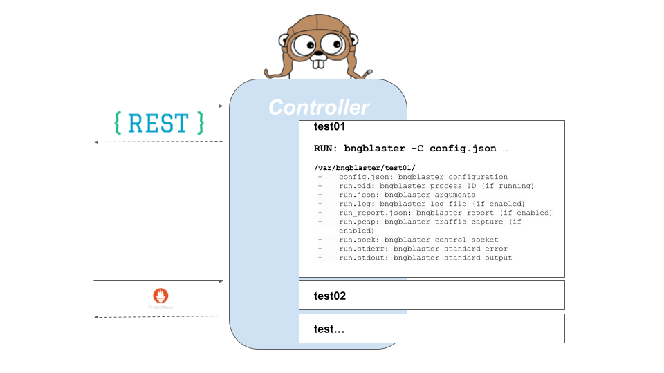
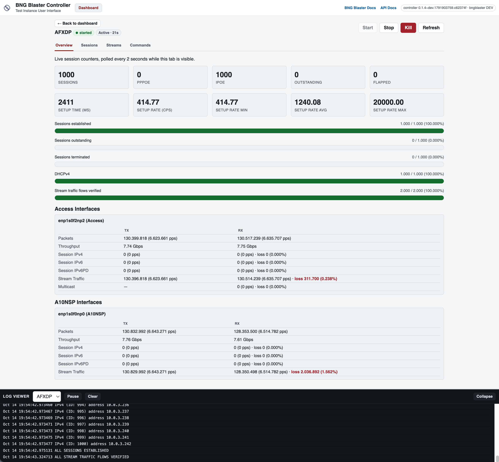

Controller and Web UI
The BNG Blaster controller allows users to create, start, stop and observe multiple test instances with ease, either programmatically through a REST API or interactively through a web UI in the browser.
By exposing the BNG Blaster JSON RPC API as a REST API, the controller enables users to perform various operations programmatically. This includes initiating test instances, configuring test parameters, monitoring test progress, and terminating test executions. The REST API provides a standardized and intuitive way to control the BNG Blaster, making it accessible to automation scripts, external applications, or custom integrations.
Furthermore, the REST API offers endpoints to upload files like configurations and to download logs and reports. These endpoints enable users to retrieve detailed information about the test execution, such as test results, performance metrics, and any encountered errors or issues.
The web UI is built on top of the same REST API and provides a dashboard of all test instances. It allows to create, start and stop test instances, watch live statistics, run commands, follow the log and download logs, reports and captures without any additional tools, which makes it convenient for manual and exploratory testing.
https://github.com/rtbrick/bngblaster-controller

Installation
The BNG Blaster controller should run on any modern Linux distribution. The current version of the controller requires BNG Blaster 1.0.0 or newer.
Download and install Debian package: https://github.com/rtbrick/bngblaster-controller/releases
$ wget https://github.com/rtbrick/bngblaster-controller/releases/download/<version>/bngblaster-controller_<version>_amd64.deb
$ sudo dpkg -i bngblaster-controller_<version>_amd64.deb
The corresponding service will be started automatically.
$ systemctl status rtbrick-bngblasterctrl.service
● rtbrick-bngblasterctrl.service - RtBrick BNG Blaster Controller
Loaded: loaded (/lib/systemd/system/rtbrick-bngblasterctrl.service; enabled; vendor preset: enabled)
Active: active (running) since Fri 2022-07-01 11:14:01 UTC; 7min ago
Main PID: 682535 (bngblasterctrl)
Tasks: 8 (limit: 309235)
Memory: 2.6M
CGroup: /system.slice/rtbrick-bngblasterctrl.service
└─682535 /usr/local/bin/bngblasterctrl
Alternatively, the BNG Blaster container image includes the controller together with the BNG Blaster.
Configuration
The BNG Blaster controller listens on port 8001 per default, assumes
the BNG Blaster to be installed at /usr/bin/bngblaster and uses
/var/bngblaster as directory for the test instances.
$ bngblasterctrl -h
Usage of bngblasterctrl:
-addr string
HTTP network address (default ":8001")
-allowed-hosts string
comma-separated host names clients may use to reach the controller, against DNS rebinding (IP addresses and localhost are always allowed; empty allows any host)
-color
turn on color of color output
-console
turn on pretty console logging (default true)
-d string
config folder (default "/var/bngblaster")
-debug
turn on debug logging
-e string
bngblaster executable (default "/usr/bin/bngblaster")
-interfaces-api
enable the interfaces endpoint (disable with -interfaces-api=false) (default true)
-schema string
path to the bngblaster configuration JSON schema served on /api/v1/schema (default "/usr/share/bngblaster/bngblaster-config.json")
-ui
enable the embedded web UI (experimental, disable with -ui=false) (default true)
-upload
enable file upload (disable with -upload=false) (default true)
When installed via the Debian package, the options are configured
with the variable BNGBLASTERCTRL_OPTS in the file
/etc/default/rtbrick-bngblasterctrl, which is preserved across
package upgrades.
# /etc/default/rtbrick-bngblasterctrl
BNGBLASTERCTRL_OPTS="-addr :8080 -d /var/bngblaster"
The service must be restarted to apply the changes.
$ sudo systemctl restart rtbrick-bngblasterctrl
Stopping or restarting the service (including through a package upgrade) also stops all running test instances.
The REST API and web UI do not require authentication yet, so restrict
who can reach the port, e.g. by binding -addr to a management address,
a firewall or an SSH tunnel. The option -allowed-hosts restricts the
host names clients may use to reach the controller, which prevents DNS
rebinding attacks (e.g. -allowed-hosts lab01,lab01.example.com).
Web UI
The controller includes an embedded web UI to create
and observe test instances without calling the REST API directly.
With the default options, it is available at http://<host>:8001/.

The dashboard lists all test instances and allows to create new ones, where the interfaces of the host are offered for selection. Each test instance can be started, stopped and killed, and provides the following views:
Overview: live session counters, setup rates and interface statistics, polled every 2 seconds while the tab is visible
Sessions: session details
Streams: traffic stream details
Commands: execute commands on the running test instance
The log viewer at the bottom shows the log of the selected test instance. Files like logs, reports and captures can be downloaded, and additional files used by the configuration (e.g. MRT files) can be uploaded.
The web UI depends on two additional endpoints, which are enabled by
default as well: the interfaces endpoint (-interfaces-api) to list
the host interfaces when creating a test instance, and the upload endpoint
(-upload) to upload files into a test instance. Each of them can be
disabled individually, e.g. to run a REST-only controller.
BNGBLASTERCTRL_OPTS="-ui=false -interfaces-api=false -upload=false"
Disabling the interfaces or upload endpoint while keeping the web UI enabled leaves the corresponding parts of the web UI non-functional.
API
OpenAPI: https://rtbrick.github.io/bngblaster-controller/
Create Test Instance
PUT /api/v1/instances/<instance-name>
This API endpoint creates a test instance if not already created. The body of this request
is stored as bngblaster configuration (config.json).
Each test instance creates a directory in /var/bngblaster/<instance-name>.
This directory contains the following files:
config.json: bngblaster configurationrun.pid: bngblaster process ID (if running)run.json: bngblaster argumentsrun.log: bngblaster log file (if enabled)run_report.json: bngblaster report (if enabled)run.pcap: bngblaster traffic capture (if enabled)run.sock: bngblaster control socketrun.stderr: bngblaster standard errorrun.stdout: bngblaster standard output
Example:
curl --location --request PUT 'http://10.10.10.10:8001/api/v1/instances/quickstart_pppoe' \
--header 'Content-Type: application/json' \
--data-raw '{
"interfaces": {
"a10nsp": [
{
"__comment__": "PPPoE Server",
"interface": "veth1.1"
}
],
"access": [
{
"__comment__": "PPPoE Client",
"interface": "veth1.2",
"type": "pppoe",
"outer-vlan-min": 1,
"outer-vlan-max": 4000,
"inner-vlan": 7
}
]
}
}'
Upload Files
POST /api/v1/instances/<instance-name>/_upload
This API endpoint uploads files into the test instance directory
(up to 4 GB per file), for example MRT or BGP RAW update files
referenced in the configuration. Relative file names in the configuration
are resolved against the test instance directory. The files managed by
the controller (e.g. run.log) cannot be uploaded. This endpoint can be
disabled with the option -upload=false.
Example:
curl --location --request POST 'http://10.10.10.10:8001/api/v1/instances/quickstart_pppoe/_upload' \
--form 'file=@isis.mrt'
Start Test
POST /api/v1/instances/<instance-name>/_start
The start API endpoint will start the bngblaster with the argument options defined in the body.
{
"logging": true,
"logging_flags": [
"debug",
"ip"
],
"report": true,
"session_count": 1000
}
All supported argument options are explained in the OpenAPI schema.
Example:
curl --location --request POST 'http://10.10.10.10:8001/api/v1/instances/quickstart_pppoe/_start' \
--header 'Content-Type: application/json' \
--data-raw '{
"logging": true,
"logging_flags": [
"debug",
"pppoe",
"ip"
],
"report": true,
"session_count": 2
}'
Status
GET /api/v1/instances/<instance-name>
The status API endpoint returns the status of the test which can be either
started or stopped.
Command
POST /api/v1/instances/<instance-name>/_command
The JSON body of this API call will be passed to the bngblaster instance
control socket (/var/bngblaster/<instance-name>/run.sock). The result will
be passed back to the client.
Example:
curl --location --request POST 'http://10.10.10.10:8001/api/v1/instances/quickstart_pppoe/_command' \
--header 'Content-Type: application/json' \
--data-raw '{
"command": "session-info",
"arguments": {
"session-id": 1
}
}'
{
"status": "ok",
"code": 200,
"session-info": {
"type": "pppoe",
"session-id": 1,
"session-state": "Established",
"...": "..."
}
}
The result code is passed as HTTP response status code.
{
"status": "warning",
"code": 404,
"message": "session not found"
}
Stop Test
POST /api/v1/instances/<instance-name>/_stop
The stop API endpoint will send the SIGINT signal to the corresponding
BNG blaster instance (kill -INT <pid>).
Delete Test Instance
DELETE /api/v1/instances/<instance-name>
This API endpoint deletes the test instance directory. The corresponding
test run is forcefully terminated (kill -9 <pid>) if running.
Reports
The BNG Blaster can generate detailed reports
at the end of the test execution. Those reports must be enabled
during the start with the argument option report. This detailed
report can be further enhanced using report_flags to include
detailed per-session and stream results. Consider that the resulting
report may be large if streams flag is enabled in combination with
a huge amount of streams (around 500MB report file for one million streams).
POST /api/v1/instances/<instance-name>/_start
{ "report": true, "report_flags": [ "sessions", "streams" ] }
The final report can be retrieved with the following request after the test has finally stopped.
GET /api/v1/instances/<instance-name>/run_report.json
After requesting the test to stop, it can take some time until the test has gracefully stopped. This can be verified using the status command. As soon as the status becomes stopped, the report file should be available.
Logs
The BNG Blaster supports extensive logging
during the test execution. This log file must be enabled
during the start with the argument option logging. The optional
argument logging_flags allows for enabling log categories.
POST /api/v1/instances/<instance-name>/_start
{ "logging": true, "logging_flags": [ "bgp", "isis", "ip" ] }
Please check logging section for detailed list of all logging flags.
The final log file can be retrieved with the following request after the test has finally stopped.
GET /api/v1/instances/<instance-name>/run.log
It is also possible to retrieve the standard output and error for troubleshooting purposes.
GET /api/v1/instances/<instance-name>/run.stderr
GET /api/v1/instances/<instance-name>/run.stdout
PCAP
The BNG Blaster supports to capture all traffic
sent and received by the BNG Blaster which must be enabled during
the start with the argument option pcap_capture.
POST /api/v1/instances/<instance-name>/_start
{ "pcap_capture": true }
The final capture file can be retrieved with the following request after the test has finally stopped.
GET /api/v1/instances/<instance-name>/run.pcap
Metrics
GET /metrics
This endpoint returns metrics for all instances in Prometheus text format.
# HELP instances_running The number of running instances
# TYPE instances_running gauge
instances_running{hostname="blaster"} 0
# HELP instances_total The total number of instances
# TYPE instances_total gauge
instances_total{hostname="blaster"} 4
The metric instances_total counts the number of test instance directories
present and instances_running shows how many of them are running.
Every metric is labeled with the hostname where the controller is running.
Per default, there are no metrics per instance. This has to be explicitly
enabled during instance start (/api/v1/instances/<instance-name>/_start)
using the new metric_flags option.
{
"logging": true,
"logging_flags": [
"error",
"ip"
],
"metric_flags": [
"session_counters",
"interfaces"
]
}
Currently, the following metrics are supported:
session_counterssession statisticsinterfacesinterface/link countersaccess_interfacesaccess interface function countersnetwork_interfacesnetwork interface function countersa10nsp_interfacesa10nsp interface function countersstreamsstream counters
The streams metric generates statistics for every stream and direction.
Therefore the streams metric should not be used with massive streams
(e.g. > 10000 streams) but there is no limit enforced.
# HELP sessions The total number of sessions
# TYPE sessions counter
sessions{hostname="blaster",instance_name="test"} 10
# HELP sessions_established The number of sessions in the state established
# TYPE sessions_established gauge
sessions_established{hostname="blaster",instance_name="test"} 10
...
Instance metrics are labeled with the instance name. All interface-specific metrics are also labeled with the corresponding interface name and type.
# HELP interfaces_rx_packets Interface RX packets
# TYPE interfaces_rx_packets counter
interfaces_rx_packets{hostname="rbfs",instance_name="test",interface_name="eth1",interface_type="Interface"} 163
interfaces_rx_packets{hostname="rbfs",instance_name="test",interface_name="eth11",interface_type="Network"} 155
interfaces_rx_packets{hostname="rbfs",instance_name="test",interface_name="eth12",interface_type="Interface"} 158
interfaces_rx_packets{hostname="rbfs",instance_name="test",interface_name="eth12",interface_type="Access"} 150
...